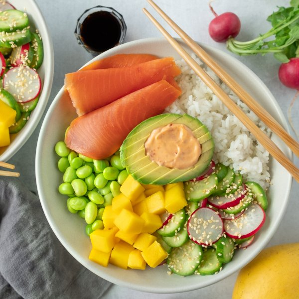

Smoked Salmon Bowl with Ginger Rice, Edamame, Mango & Avocado

Total Time
30 min
Nutrition (per serving)
669.9 kcalCalories
25.3 gProtein
72.7 gCarbs
33.3 gFat
Full nutrition table
| Calories | 669.9 kcal |
| Total fat | 33.3 g |
| Saturated fat | 5.2 g |
| Trans fat | 0.1 g |
| Cholesterol | 22.1 mg |
| Sodium | 1201.1 mg |
| Carbohydrates | 72.7 g |
| Fiber | 14 g |
| Sugars | 18.7 g |
| Protein | 25.3 g |
| Potassium | 1351.3 mg |
| Calcium | 112 mg |
| Iron | 5.2 mg |
| Vitamin A | 483.1 IU |
| Vitamin C | 55.8 mg |
| Vitamin D | 1.8 IU |
Cookware
Ingredients
- 2avocados
- 1 ½ cupsedamame
- 1English cucumber
- 2 (1 inch) piecesginger root
- 1 cupjasmine rice
- 1mango
- 1 bunchradish
- 2 (4 oz) pkgssmoked salmon
- brown sugar
- chili-garlic sauce
- mayonnaise
- rice vinegar
- salt
- sesame seeds
- soy sauce
Steps
- Wash and dry the fresh produce.2 (1 inch) pieces ginger root
1 English cucumber
1 bunch radish
1 mango
2 avocados - Peel and grate or mince the ginger.
- Using a strainer or colander, rinse the rice under cold, running water, then drain and transfer to a small saucepan. Add ginger, water, and salt; bring the mixture to a boil over high heat.1 cup jasmine rice
2 cup water
½ tsp salt - Once the liquid comes to a boil, stir the mixture, cover the saucepan, and reduce the heat to low. Cook the rice until the liquid is fully absorbed, 15-18 minutes. Once done, remove the rice from the heat and let it stand, still covered, for 5 minutes.
- Meanwhile, place edamame in the colander and rinse under hot, running water (from the tap) to defrost; set aside to drain.1 ½ cups edamame
- Combine vinegar, sesame seeds, sugar, and salt in a medium bowl; whisk to dissolve the sugar.2 tbsp rice vinegar
2 tsp sesame seeds
2 tsp brown sugar
¼ tsp salt - Trim cucumber and thinly slice crosswise into rounds. Add to the bowl with the vinegar mixture.
- Trim off and discard tops and root ends of radishes; thinly slice and add to the bowl with the cucumber. Stir to combine the salad.
- Peel mango and slice flesh away from the pit, starting with the flat sides. Medium dice and set aside.
- Combine chili-garlic sauce and mayonnaise in a small bowl; whisk until smooth.2 tsp chili-garlic sauce
¼ cup mayonnaise - Halve and pit the avocados. Slice thinly while still in skin, then scoop out, keeping avocado halves intact. Fill avocado halves with spicy mayo.
- Divide rice, edamame, mango, and cucumber-radish salad between bowls; top with smoked salmon and an avocado half. Serve with soy sauce on the side and enjoy!2 (4 oz) pkgs smoked salmon
4 tsp soy sauce